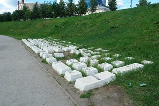
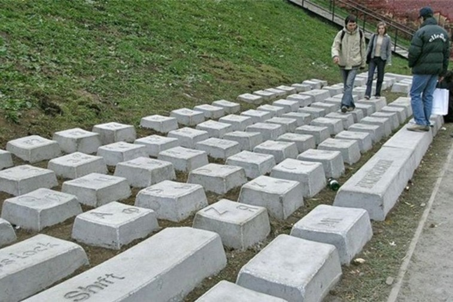

Памятник клавиатуре
Клавиатура была создана в 2005 году в качестве спецпроекта фестиваля «Длинные истории Екатеринбурга» по проекту Анатолия Вяткина. Продюсерами и кураторами проекта выступили Наиля Аллахвердиева и Арсений Сергеев, представлявшие на тот момент культурное агентство «АртПолитика». Производство проекта было осуществлено при технической поддержке компании «Атомстройкомплекс». Несмотря на высокую популярность у горожан и гостей города, проект так и не обрёл официального статуса памятника или достопримечательности. Фактически не признанная местными властями как культурно значимый объект клавиатура тем не менее вошла во многие неофициальные путеводители по Екатеринбургу. С неё весной 2011 года началось рисование на асфальте «Красной линии», проходящей через 32 главных достопримечательности центра города.Поэтому первоначальный и финальный варианты заметно отличаются. В первом макете памятника клавиши в несколько раз больше, а сама клавиатура эргономичной формы. Убрали и иронию, юмор; решили, что это будет постоянная субстанция, которая должна в Екатеринбурге «что-то» выражать. И сделать её нужно из бетона, а не пенобетона, как планировал автор.  